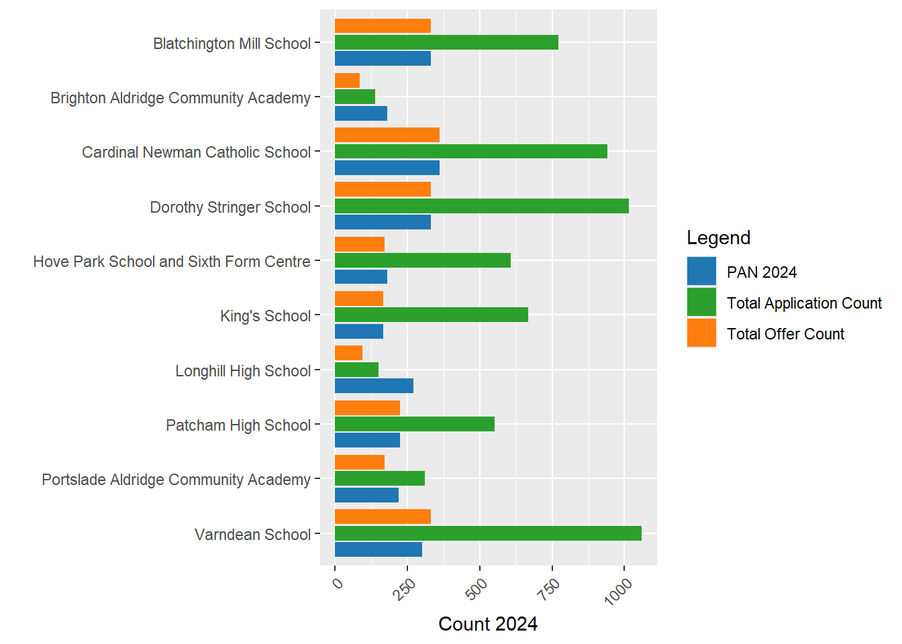

Brighton and Hove Secondary School Admissions Proposal - Week 2 Analysis
Terminology
PAN - Published Admission Number. This is the number of pupils a school is permitted to allow to enter a school in Year 7.
FSM - Free School Meals. This is the proportion of pupils in a school or residential area that receive free school meals because their household income is below a certain threshold. It is a widely used measure of social deprivation. In Brighton, the FSM threshold is currently household income below £16,190 - https://www.brighton-hove.gov.uk/schools-and-learning/free-school-meals
Headlines / Executive Summary
PANs are one big driver of the issues. Despite what the Council says, there is no need to reduce PANs for most schools in the City in 2026 - reduction in PANS is necessary for some schools, but analysis below shows even for schools where they justifiably could be reduced, numbers still will be well in excess of their current admission figures and not smaller than the smallest school in the city.
No change to current catchment boundaries is required in 2026 while still hitting Council PAN reduction targets.
The desired increase in social mixing that the council is currently trialling through allowing FSM pupils from other catchments priority over students within, will in all likelihood lead to some of the outcomes already desired by the council (Social Mixing and achievement improvements). It is a pioneering initiative with potentially very positive outcomes that needs space and time to be fully evaluated. Results will not published until early 2025 - after any changes the council might try and push through under the current time table. In the People Overview and Scrutiny Committee held on 9/10/2024, the Council’s own expert, Dr Ellen Greaves, University of Exeter, urged the council to wait for the results of this initiative before making any changes to the admissions system. Artificially reducing PANS in high demand schools will amplify problems as out of catchment students attend popular schools.
PANS for Academies, Free Schools and Religious schools cannot currently be set by the council. However, in the above meeting, Councillor Haver* raised a point that a Government White Paper is on the horizon which may give local authorities the power to control ALL PANs in the near future - this could alleviate some of the issues I am about to describe still further.
*I think this was her name - audio wasn’t perfect
The argument that Cllr Taylor and Richard Barker made in the face-to-face meeting was that they would not consider a PAN lower than 180 for Longhill as it would make it unviable. This is demonstrably untrue when comparing similar schools across the country - and even within the City itself! The King’s Free school has a PAN of 165 and in a short time has become one of the most successful and thriving schools in the City. Analysis of all similar schools in England and Wales shows out of 1163 similar schools, Longhill ranks 496, with 495 smaller open 11-16 secondary schools in existence today.
In the work below, I offer a viable alternative to the proposals presented by the council. Under my proposed ‘Kings PAN Scenario’:
no detrimental impact is felt across most schools in the city in 2026
a headline city-level PAN reduction is still achieved under the current council modelling scenarios
no school has PANs smaller than the smallest school already thriving in the city - and higher than or equal to their offers in 2024
options for re-use of land and if additional social and/or affordable housing is created in land released by reducing the estate, this could contribute to the social mixing in an otherwise relatively affluent area
Prelude - a review of where we are at after a busy week
There is a real issue of socio-economic deprivation and segregation in the city with residents in the most deprived Eastern parts of the city lacking both quality in education provision and choice. This is a wider and long-term issue and has driven initiatives to tackle socio-economic disadvantage through the school system and admissions shake-ups in the past, many of which have failed due to a lack of systems thinking.
Different to previous attempts to re-draw the catchments, there is an additional challenge this time around of reducing numbers of children in the city, reducing the money available from the government in a system which allocates money according, primarily, pupil numbers and levels of deprivation associated with those pupils.
Brighton has what could be described as a ‘multiplier effect’ whereby the least popular provision is also geographically remote, but nearest to the most deprived children.
The Council is faced with a big challenge, but rather than engaging in systems thinking and recognising that schools are a part of an interconnected urban ecosystem which encompasses the social fabric of the city with individual children, families and communities, transport systems, the environment, homes, jobs, and the economy, they are focusing only on the narrow educational dimensions of the problem, which while incredibly important, are no more or less important that the whole city system and cannot be managed in isolation from the rest of the city.
Having attended both the in-person consultation and the People Overview and Scrutiny Committee held on 9/10/2024, it is clear that the council is trying to rush through ill-conceived, poorly evidenced proposals that fail to look holistically at the problem. The level of objection from a huge number of families in the city is indicative of this failure.
A particularly big failure of process is that not only have the Council neglected the truly interconnected nature of schools and communities in the city, they have failed in their duty to carry out even the most basic evidence gathering process before launching an engagement/consultation process on the residents. Had they have completed this job in advance, they could have understood the problem better and come up with viable alternative, less disruptive solutions - perhaps like the ones I propose below.
Nothing has convinced me that the Council is interested in evidence-based creative policy over dogmatism and ideology - I sincerely hope my impressions in person are off the mark and I really do hope this is a mis-characterisation and I would love them to prove me wrong on this!
I have repeatedly asked the council to share their data with me and offered my services on multiple occasions to assist them in the evidence gathering I have expertise in. I am still yet to receive data from them, while they have interacted with me over email a little and I took the chance to talk to Cllr Taylor at the face-to-face meeting on Tuesday, this lack of cooperation is saddening.
Much of the data presented on this page are taken from a rare example of published and useful data here - https://www.brighton-hove.gov.uk/allocation-factsheet-year-7-places-september-2024
PANS for 2026 and 2030 are derived from tables in the power point from the consultation website - https://yourvoice.brighton-hove.gov.uk/en-GB/projects/secondary-school-engagement-exercise/1
The PAN Problem(s)
PAN Background
It has become clearer to me over the last week that one of the big issues in this whole consultation process is the PAN - both the total PAN in different years (which relates to population projections produced by the Council), and the individual school-level PANs (which affect how many pupils a school can admit at year 7). I will explore both of these dimensions, but first some local background:
A school cannot legally admit fewer children than its PAN where pupils wish to attend the school. The PAN is initially determined (initially) by the physical size of the school by the Government’s Net Capacity Assessment Programme, but it is not set in stone and can be reduced or increased according to demand. Physically larger schools may have artificially higher PANs even when lived pupil numbers are low.
In most secondary schools in Brighton (Stringer, Varndean, Hove Park, Blatchington, Patcham, Longhill) the PAN is set by the council.
Religious and Free Schools such as Cardinal Newman and King’s School are allowed to set their own PANs and the council can’t (presently) intervene.
Academies (Brighton Aldridge Community Academy - BACA, and Portslade Aldridge Community Academy - PACA) are also allowed to set their own PANs and the council can’t intervene.
One issue is that PANs for all schools contribute to the overall total number of ‘places’ in the City - but these don’t necessarily reflect pupils or their distribution (see my last paper if you want to know about geographic distribution). So if the Council is determined to reduce the number of places (PANs) in the city, if the Religious Schools and the Academies refuse to reduce their PANs and the council is wedded to reducing numbers, the only way it can do this is by cutting, proportionally, MORE places from Stringer, Varndean, Hove Park, Blatchington, Patcham, Longhill than it would have done if it could control PANs everywhere. At least, that is the way they are operating at the moment - as we will see below, there are other options.
In the People Overview and Scrutiny Committee held on 9/10/2024, Councillor Haver* (*again, I think that was her name) raised a point that a Government White Paper is on the horizon which may give local authorities the power to control ALL PANs in the near future - this could alleviate some of the issues I am about to describe, but at the moment, nothing can be done by the council to affect PANS in some schools in the city.
PANS across Brighton
The graph below in Figure 1 shows the PANs for 2024 taken from here:
https://www.brighton-hove.gov.uk/allocation-factsheet-year-7-places-september-2024

Figure 1 - PANs by School and Type, Brighton
We can see from this graph that the academy schools and King’s School have a relatively low PAN compared to other schools in the City, with Cardinal Newman enjoying a PAN well above average at 360. This represents 14% of the total places available.
As an interesting aside, we know from the 2021 Census that 30.9% of the population of Brighton identify as Christian - https://www.ons.gov.uk/census/maps/choropleth/identity/religion/religion-tb/christian?lad=E06000043 - if we believe wikipedia - https://en.wikipedia.org/wiki/Religion_in_the_United_Kingdom - 13% of Christians in the UK are Catholic. So if we apply that percentage to Brighton, we can expect 3.9% of the population to be Roman Catholic. But 14% of the school places can be reserved for Catholic Children as a priority. I’ll just leave that there to sink in!
PANs vs Applications and Intake
The graph below in Figure 2 includes exactly the same numbers as above, but this time contextualises them relative to the total number of applications each school had in 2024 and the number of places that were actually offered to students that year.
Figure 2 - PAN 2024 relative to counts of total applications and offers in the same year
A couple of things to point out:
Total Applications include all 1st, 2nd and 3rd choices for each school. It’s likely that schools in multi-school catchments may receive both first and second choices, potentially artificially inflating that number relative to the schools in single school catchments, so bear that in mind, however it can still be viewed as a crude measure of demand. I will disaggregate 1st, 2nd, and 3rd choices in some other graphs below.
All schools within multi-school catchments are very popular and are able to easily fill their offer numbers and probably could at least twice over - which is useful context when considering PAN reductions.
Some schools in Brighton received low numbers of applications. For BACA and Longhill, the numbers of applications they received were BELOW their PANs. These were not popular schools in 2024.
For BACA and Longhill, their total offer numbers were also below their PANs. This means the schools were very under-subscribed and had excess capacity. Longhill had a PAN of 270 and a total offer count of 94. Almost three times fewer students attending than there were places available.

Figure 3 - Relative School Popularity (School 2024 Application to 2024 PAN ratio divided by Average 2024 Brighton Application to PAN ratio)
Another way of looking at Applications vs PANs is take the ratio of applications into PAN and compare this with the city average. In the graph in Figure 3 above, the data has been rescaled (code in the github link) so that anything > 0 is greater popularity relative to other schools in the city, and anything < 0 is less popular.
Interestingly, we can see that Kings School - the smallest in the city in terms of places available with a PAN of 165, is relatively the most popular, Longhill, on the other hand, is relatively the least popular even after scaling according to the city average.
First Preferences, Offers and Rejections

Figure 4 - PAN 2024 relative to total First Preference Applications, Offers and Rejections.
Some things to note here in Figure 4:
First Preferences and rejections are an alternative demand measure for a school and less affected by double counting than total applications. More rejections occur where first preferences are high.
Three schools - Varndean, King’s and Cardinal Newman had more first-preference than PANs, indicating very high demand.
BACA, PACA and Longhill have significantly more PANs than first preference and thus larger proportions of their cohorts are filled with students who did not choose them as a first choice, indicating low demand.
Interpretation
- We can see from the evidence above that PANS for schools in the city bear little or no relation to the popularity of the schools in 2024, as evidenced through their application figures. In fact, for the most popular schools, their first-preference applications are far in excess of the places they have been allocated by the council - their PANS could easily be much higher, relative to other schools in the City.
- Some schools have PANs far in excess of their popularity which affects the rest of the system negatively. PANs matter when you have more demand than places as you can’t go any higher. When you have less demand than places in one school, the PAN is entirely irrelevant for the school (if you’ve only given out 94 offers, it doesn’t matter if your PAN is 270 or 2700!) but HUGELY relevant for the rest of the schools in the system as the number of pupils they can take in is reduced.
Proposed Changes to PANs

The graph above is a representation of the data provided in slide 11 of the materials supplied by the council. Under “Option A”, it’s clear to see that the council proposes to reduce PANS for all Council run schools in the city, first in 2026 and then again in 2030.
Below we see the same data, but this time in a table with the Council City-Wide PAN targets they have set at the bottom and three illustrative scenarios I have produced to explore the decisions the council is making and the biases in their PAN setting. The final column is a Scenario I am calling the “Kings 2026 PAN Scenario” which I will explain below.
# Filter and reshape data
library(dplyr)
library(knitr)Warning: package 'knitr' was built under R version 4.3.3# Calculate the sum row
sum_row <- admissions %>%
summarise(across(3:8, sum, na.rm = TRUE))Warning: There was 1 warning in `summarise()`.
ℹ In argument: `across(3:8, sum, na.rm = TRUE)`.
Caused by warning:
! The `...` argument of `across()` is deprecated as of dplyr 1.1.0.
Supply arguments directly to `.fns` through an anonymous function instead.
# Previously
across(a:b, mean, na.rm = TRUE)
# Now
across(a:b, \(x) mean(x, na.rm = TRUE))# Add blank and "Total" labels for the sum row
sum_row <- cbind("", "Total", sum_row)
# Convert sum_row to a data frame
sum_row <- as.data.frame(sum_row, stringsAsFactors = FALSE)
# Ensure column names match exactly
names(sum_row) <- names(admissions)[1:8]
# Bind the sum row to the original data, after removing headers
admissions_with_sum <- rbind(admissions[, 1:8], setNames(sum_row, names(admissions[, 1:8])))
# Update the headers for columns 3-8
colnames(admissions_with_sum)[1:8] <- c("School", "Type","PAN 2024", "PAN 2026", "PAN 2030", "PAN 2026 Scaled Popularity", "PAN 2026 Scaled Even", "PAN 2026 Kings Scenario")
# Create kable table
kable(admissions_with_sum, caption = "Council PAN and PAN Scenarios")| School | Type | PAN 2024 | PAN 2026 | PAN 2030 | PAN 2026 Scaled Popularity | PAN 2026 Scaled Even | PAN 2026 Kings Scenario |
|---|---|---|---|---|---|---|---|
| Blatchington Mill School | Community school | 330 | 300 | 240 | 289 | 315 | 330 |
| Brighton Aldridge Community Academy | Academy sponsor led | 180 | 180 | 180 | 57 | 172 | 165 |
| Cardinal Newman Catholic School | Voluntary aided school | 360 | 360 | 360 | 388 | 343 | 360 |
| Dorothy Stringer School | Community school | 330 | 300 | 270 | 380 | 315 | 330 |
| Hove Park School and Sixth Form Centre | Community school | 180 | 180 | 180 | 250 | 172 | 180 |
| King’s School | Free schools | 165 | 165 | 165 | 275 | 157 | 165 |
| Longhill High School | Community school | 270 | 240 | 180 | 55 | 257 | 165 |
| Patcham High School | Community school | 225 | 225 | 180 | 228 | 214 | 225 |
| Portslade Aldridge Community Academy | Academy sponsor led | 220 | 220 | 220 | 128 | 210 | 220 |
| Varndean School | Community school | 300 | 270 | 240 | 393 | 286 | 300 |
| Total | 2560 | 2440 | 2215 | 2443 | 2441 | 2440 |
Observations - Council Proposed PANs
I have made a number of earlier observations which look at proposed PAN reductions for different schools in the city level relative to the population distribution of pupils and have shown that there are more severe reductions in areas of higher demand and less severe reductions in areas of lower demand, so I won’t go over that again here.
What I will comment on, however, are the PAN levels relative to school popularity - a related by slightly different dimension. Taking relative popularity as shown in Figure 3 above, and using that to scale up and down the
PAN 2026 Scenario 1 - Scaled by Popularity
Firstly, I should point out that these scenarios are illustrative - I know that school entry numbers are predicated on multiples of 30, but these are designed to show the effect of different.
Column 4 scales the total target PAN number of 2440 (rounding errors make the total slightly higher). This scaling takes the relative school popularity score across the city shown in
PANS Across Brighton - Conclusions
- King’s School has PAN of 165 and is a popular and viable school within the city. What if we scale BACA and Longhill to this, how does this affect total PAN?
Small Schools in England and Wales
- One argument put forward by the Council is “it does
The histogram below shows the distribution of the number of pupils in open, state funded 11-16 secondary schools in England and Wales. The red and cyan lines show the number of pupils at Longhill and PACA respectively.
I have not included BACA in this graph as it is an 11-19 school and thus not directly comparable, however the recorded number on its role in 2024 is 802 - so a much smaller school than Longhill.

Closing Schools in Brighton and Hove with low numbers
The council has repeated cited at the in person consultation meeting I attended and again in the People Overview and Scrutiny Committee held on 9/10/2024 that it is not sustainable to have schools with low numbers of pupils. In the Scrutiny meeting, Councillor Haver asked a question about the minimum viability of schools.
Councillor Collier and Colleague commented that is was their view that 180 pupils was the minimum single year PAN they would consider viable.

#get some LSOA pop weighted centroids for E&W from ONS
url <- "https://services1.arcgis.com/ESMARspQHYMw9BZ9/arcgis/rest/services/LLSOA_Dec_2021_PWC_for_England_and_Wales_2022/FeatureServer/0/query?outFields=*&where=1%3D1&f=geojson"
# Read the GeoJSON file into an sf object
sf_point_data <- st_read(url)Reading layer `OGRGeoJSON' from data source
`https://services1.arcgis.com/ESMARspQHYMw9BZ9/arcgis/rest/services/LLSOA_Dec_2021_PWC_for_England_and_Wales_2022/FeatureServer/0/query?outFields=*&where=1%3D1&f=geojson'
using driver `GeoJSON'
Simple feature collection with 35672 features and 3 fields
Geometry type: POINT
Dimension: XY
Bounding box: xmin: -6.311076 ymin: 49.916 xmax: 1.754594 ymax: 55.78286
Geodetic CRS: WGS 84#save locally
st_write(sf_point_data, here("data", "EW_LSOA_PW_Centoid.geojson"), append = TRUE)Updating layer `EW_LSOA_PW_Centoid' to data source `E:/BH_Schools_2/data/EW_LSOA_PW_Centoid.geojson' using driver `GeoJSON'
Updating existing layer EW_LSOA_PW_Centoid
Writing 35672 features with 3 fields and geometry type Point.#brighton school data
brighton_school_children <- read_csv(here("data", "BrightonLSOASchoolChildren.csv"))Rows: 165 Columns: 17
── Column specification ────────────────────────────────────────────────────────
Delimiter: ","
chr (2): lsoa_name, lsoa_code
dbl (15): total_people, total_pct, total_bh_prop, 5_9_total, 5_9_lsoa_pct, 5...
ℹ Use `spec()` to retrieve the full column specification for this data.
ℹ Specify the column types or set `show_col_types = FALSE` to quiet this message.btn_lsoa_list <- as.data.frame(brighton_school_children$lsoa_code) %>%
clean_names()
lsoa_btn_pw_centroids <- sf_point_data %>%
st_transform(27700) %>%
clean_names %>%
select(lsoa21cd, geometry)
lsoa_btn_pw_centroids <- lsoa_btn_pw_centroids %>% right_join(btn_lsoa_list, by = c("lsoa21cd" = "brighton_school_children_lsoa_code"))
st_write(lsoa_btn_pw_centroids, here("data", "lsoa_btn_pw_centroids.geojson"), append = TRUE)Updating layer `lsoa_btn_pw_centroids' to data source `E:/BH_Schools_2/data/lsoa_btn_pw_centroids.geojson' using driver `GeoJSON'
Updating existing layer lsoa_btn_pw_centroids
Writing 165 features with 1 fields and geometry type Point.Reading layer `BrightonSecondaryCatchments' from data source
`E:\BH_Schools_2\data\BrightonSecondaryCatchments.geojson'
using driver `GeoJSON'
Simple feature collection with 6 features and 2 fields
Geometry type: MULTIPOLYGON
Dimension: XY
Bounding box: xmin: 523887.8 ymin: 100896.4 xmax: 539613.4 ymax: 110190.1
Projected CRS: OSGB36 / British National GridReading layer `EW_LSOA' from data source `E:\BH_Schools_2\data\EW_LSOA.geojson' using driver `GeoJSON'
Simple feature collection with 35672 features and 11 fields
Geometry type: MULTIPOLYGON
Dimension: XY
Bounding box: xmin: -6.418667 ymin: 49.86467 xmax: 1.763706 ymax: 55.81109
Geodetic CRS: WGS 84Reading layer `oa_brighton' from data source
`E:\BH_Schools_2\data\oa_brighton.geojson' using driver `GeoJSON'
Simple feature collection with 936 features and 10 fields
Geometry type: MULTIPOLYGON
Dimension: XY
Bounding box: xmin: 523598.1 ymin: 101780.1 xmax: 539862.4 ymax: 111919.1
Projected CRS: OSGB36 / British National GridReading layer `brighton_roads' from data source
`E:\BH_Schools_2\data\brighton_roads.shp' using driver `ESRI Shapefile'
Simple feature collection with 4746 features and 9 fields
Geometry type: MULTILINESTRING
Dimension: XY
Bounding box: xmin: 523824.1 ymin: 101686.4 xmax: 539547.8 ymax: 112419.1
Projected CRS: OSGB36 / British National Grid[1] "21"#travel time matrix
# Set parameters
mode = c("WALK")
max_walk_time = 90 # minutes
max_trip_duration = 90 # minutes
departure_datetime = as.POSIXct("23-05-2024 8:30:00",
format = "%d-%m-%Y %H:%M:%S",
tz = "GMT")
#note the code below already requires the h3 core matrix to be set up
# Calculate the travel time matrix by Transit
ttm_btn_lsoa_to_School = travel_time_matrix(r5r_core = r5r_core,
origins = bh_sec_sch,
destinations = brighton_lsoa_points_r5,
mode = mode,
departure_datetime = departure_datetime,
max_walk_time = max_walk_time,
max_trip_duration = max_trip_duration)Warning in assign_points_input(origins, "origins"): 'origins$id' forcefully
cast to character.Warning in assign_points_input(destinations, "destinations"): 'destinations$id'
forcefully cast to character.#join codes back to the matrix and get it ready from plotting
ttm_btn_lsoa_to_School$orig_lsoa <- brighton_lsoa_centroids$lsoa21cd[match(ttm_btn_lsoa_to_School$to_id, brighton_lsoa_centroids$fid)]
ttm_btn_lsoa_to_School$dest_sch <- brighton_sec_schools_wgs84$establishment_name[match(ttm_btn_lsoa_to_School$from_id, brighton_sec_schools_wgs84$urn)]
ttm_btn_lsoa_to_School <- ttm_btn_lsoa_to_School %>%
mutate(to_id = as.factor(to_id)) %>%
unite(od_code, orig_lsoa, to_id, sep = "_", remove = FALSE)
simple_ttm <- ttm_btn_lsoa_to_School %>%
select(orig_lsoa, to_id, travel_time_p50) %>%
rename(orig = orig_lsoa, dest = to_id, flow = travel_time_p50)
class(ttm_btn_lsoa_to_School)[1] "data.frame"simple_ttm <- na.omit(simple_ttm)
#brighton_lsoa_to_school_times <- od2line(flow = simple_ttm, zones = lsoa_btn_pw_centroids, destinations = bh_sec_sch_bng, zone_code = "orig", dest_code = "dest", zone_code_d = "id")
#brighton_lsoa_to_school_times <- od2line(flow = simple_ttm, zones = lsoa_btn_pw_centroids, destinations = bh_sec_sch_bng, zone_code = "orig", dest_code = "dest", zone_code_d = "id")
#brighton_lsoa_to_school_times <- od2line(flow = simple_ttm, zones = lsoa_btn_pw_centroids, destinations = brighton_sec_schools)
#write_csv(simple_ttm, here("data", "simple_ttm.csv"))
#st_write(brighton_sec_schools, here("data", "brighton_sec_schools.geojson"), append = TRUE)Remember VAT on private schools - look at private school numbers in the city